Como usar o CRM no dia a dia, tela por tela. Escolha o seu tipo de trabalho abaixo. Os números amarelos nos prints mostram onde clicar. Os clientes dos prints são de exemplo.
Cada vendedor vê só as telas do seu trabalho. Se faltar alguma tela, peça liberação ao gestor. A caixa Buscar no menu acha qualquer tela digitando parte do nome.
No canto de cima fica o sino de avisos: lead novo distribuído para você, compromisso chegando, pedido que mudou de etapa. Abra sempre que tiver número vermelho.
Todo contato vai para o CRM. Ligou, mandou WhatsApp ou visitou: registre na hora. O que não está no CRM não aparece no seu resultado, nos relatórios nem no painel da TV.
O lead chega distribuído para você. Seu trabalho é falar com ele rápido, marcar sempre o próximo contato e levar até o Ganho ou o Perdido.
Menu Kanban de Leads. Cada coluna é uma etapa e cada cartão é um lead. A etiqueta colorida embaixo do cartão diz quando é o próximo contato: ATRASADO a data já passou, HOJE é para hoje, AMANHÃ, e em azul são os próximos dias.
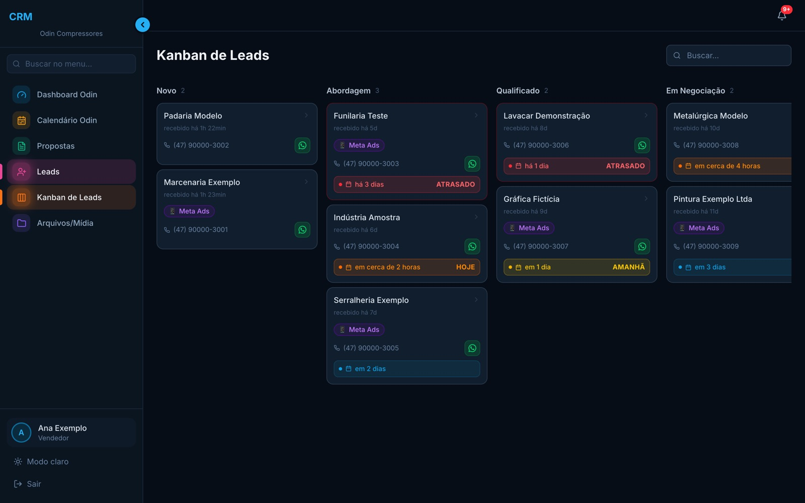
1 2 3 4Clique no cartão para abrir o lead. É aqui que você registra cada tentativa de contato e escolhe quando vai falar com ele de novo.
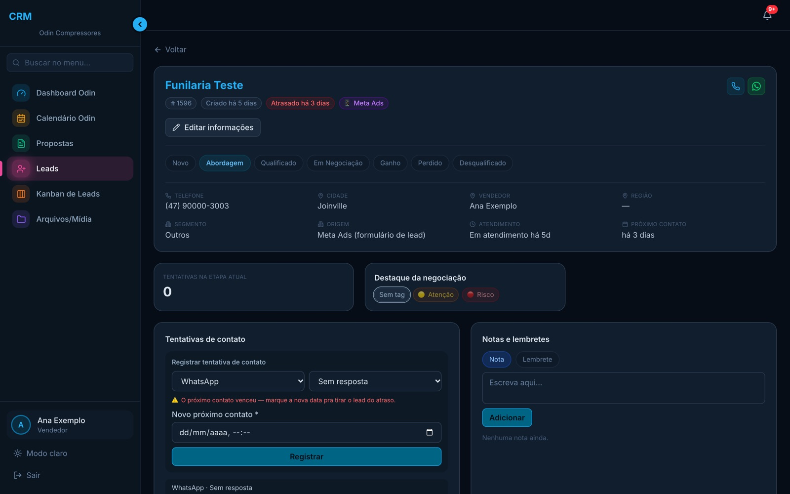
1 2 3 4 5 6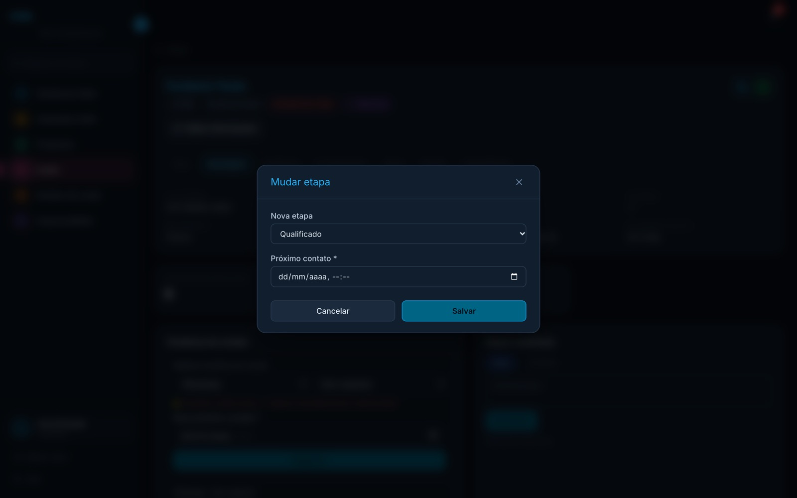
1 2| Etapa | Quando usar | O CRM pede |
|---|---|---|
| Novo | Chegou e ainda não foi atendido. | Nada: fale com o lead. |
| Abordagem | Já tentou contato e está conversando. | Próximo contato (até o limite de dias úteis). |
| Qualificado | Tem interesse real e perfil de compra. | Próximo contato. |
| Em Negociação | Orçamento ou proposta enviada. | Próximo contato e valor. |
| Ganho | Fechou a venda. | Valor final e forma de pagamento. |
| Perdido | Não vai comprar agora. | Motivo da perda. |
| Desqualificado | Não é cliente (contato errado, fora do perfil). | Motivo. |
Um lead fica ATRASADO quando está aberto e a data de Próximo contato já passou. Ele só sai do atraso de dois jeitos: ganhando uma data nova ou sendo encerrado.
Mandar mensagem pelo WhatsApp e não registrar nada no CRM. Escrever só uma nota sem data. Deixar para "ver depois". Se o cliente pediu para chamar daqui a uma semana, marque a data de daqui a uma semana. Se não respondeu, marque a próxima tentativa.
Comece o dia pelo Kanban de Leads: primeiro os ATRASADO, depois os HOJE, depois os Novo. Termine o dia sem nenhuma etiqueta vermelha.
Todo mês cada cliente da sua carteira vira um cartão no Kanban. A meta é falar com todos dentro do mês e levar os interessados até o Fechado.
Menu Fila de Hoje. O CRM já monta a lista de quem precisa de atenção, do mais urgente para o menos urgente. Não precisa procurar no Kanban.
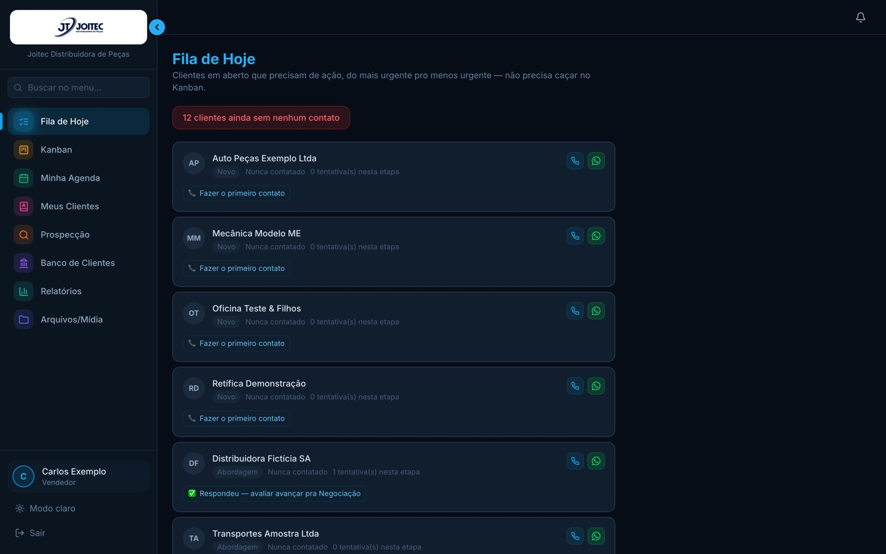
1 2 3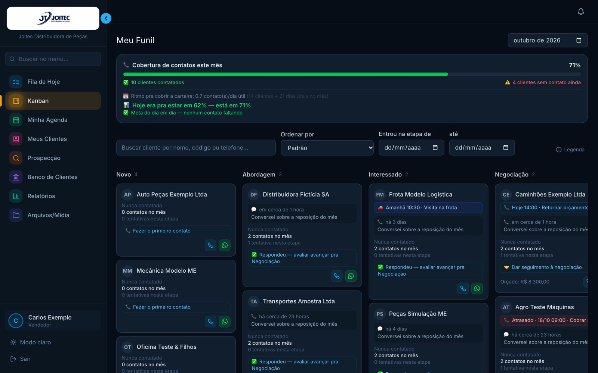
1 2 3 4 5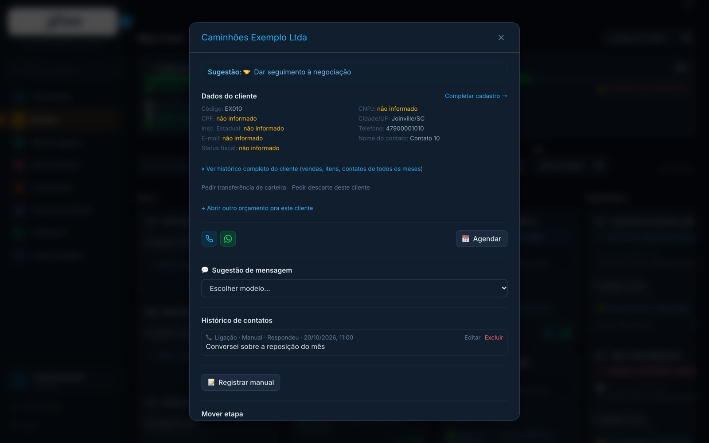
1 2 3 4 5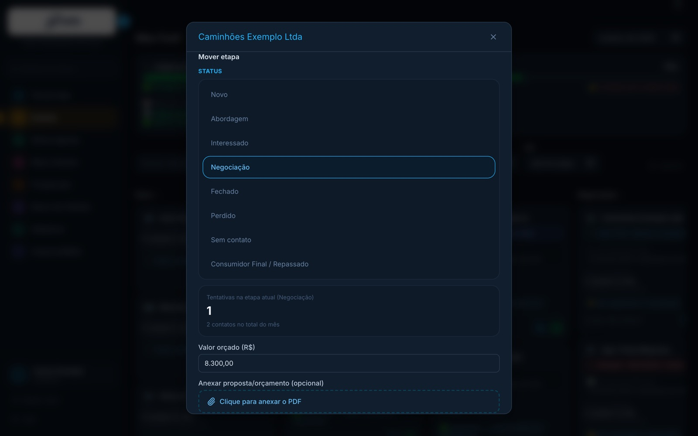
1 2 3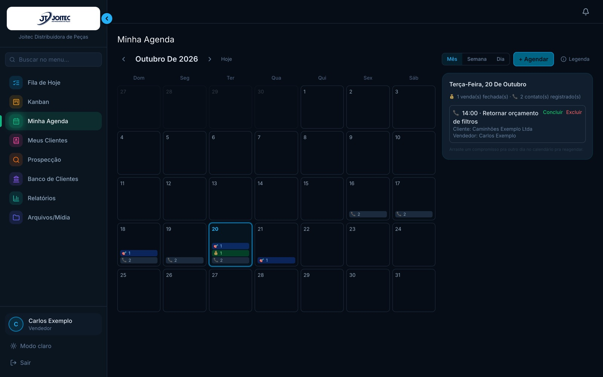
1 2 3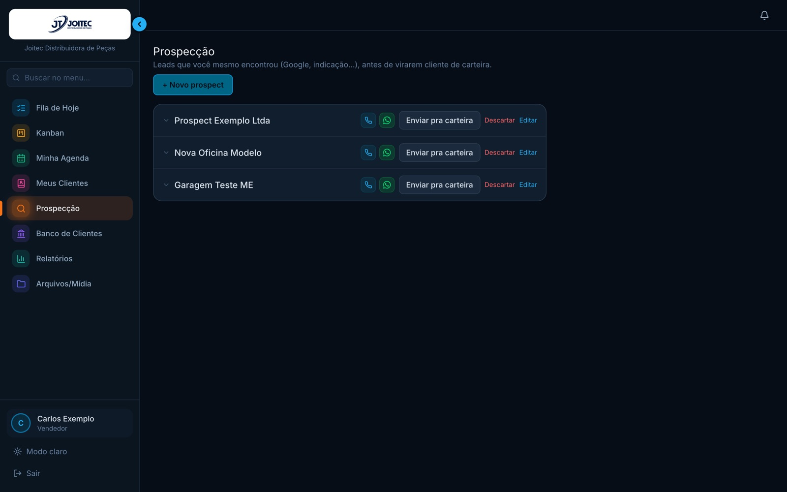
1 2Toda visita vai para o CRM com check-in no cliente. A visita boa vira proposta, e a proposta aprovada vira pedido, que é a venda.
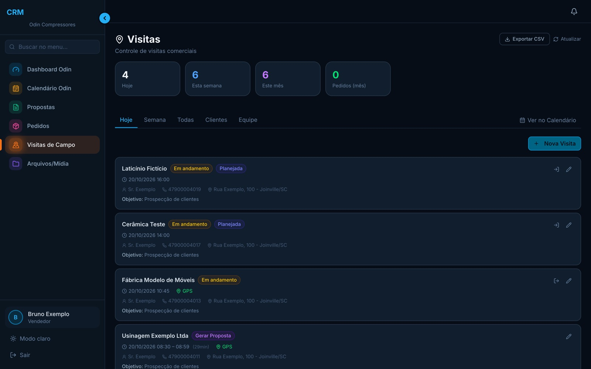
1 2 3 4 5 6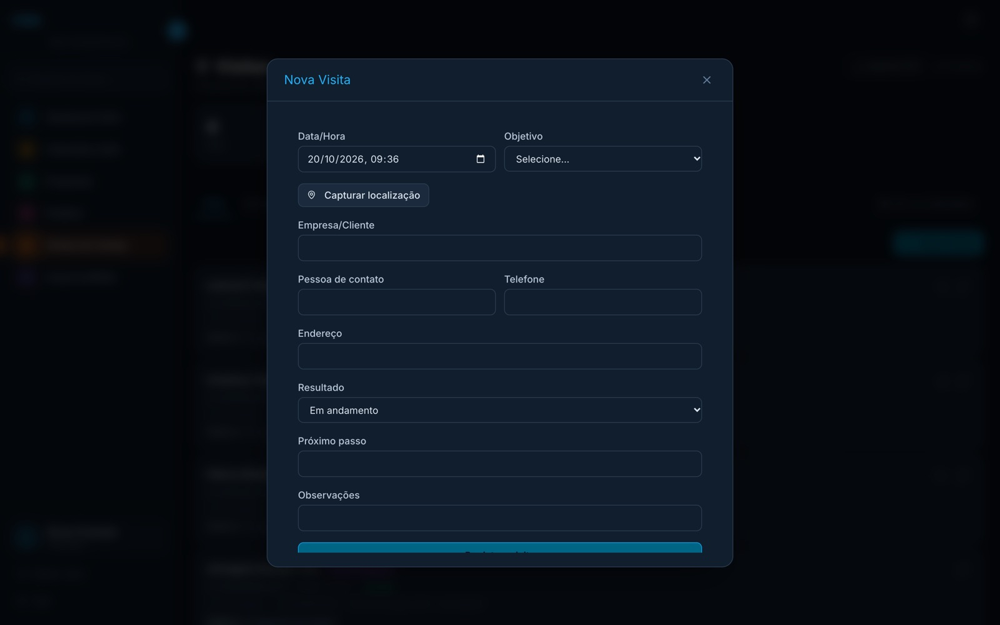
1 2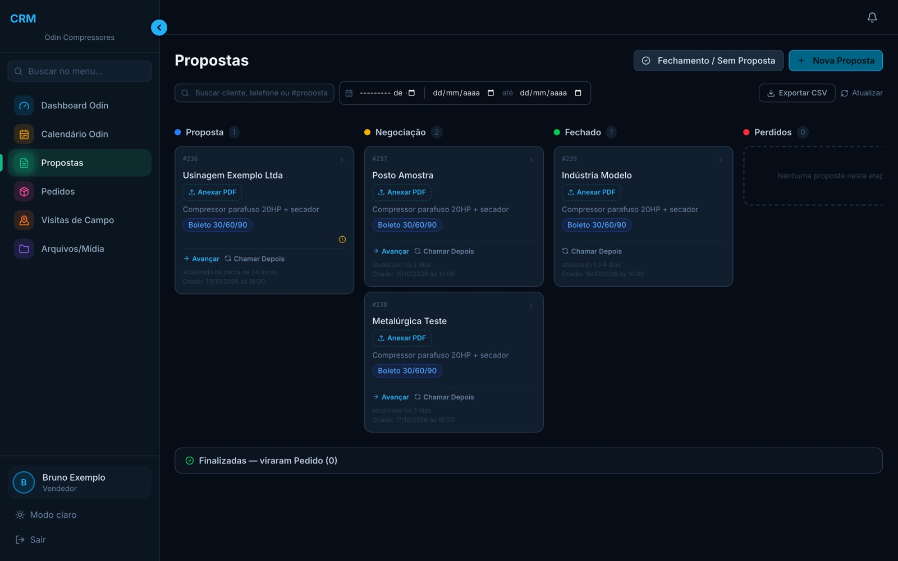
1 2 3 4 5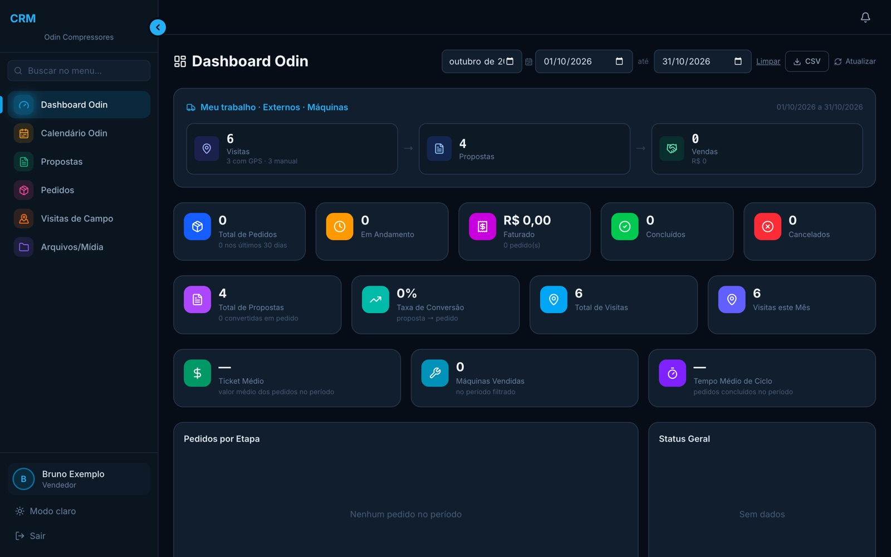
1 2